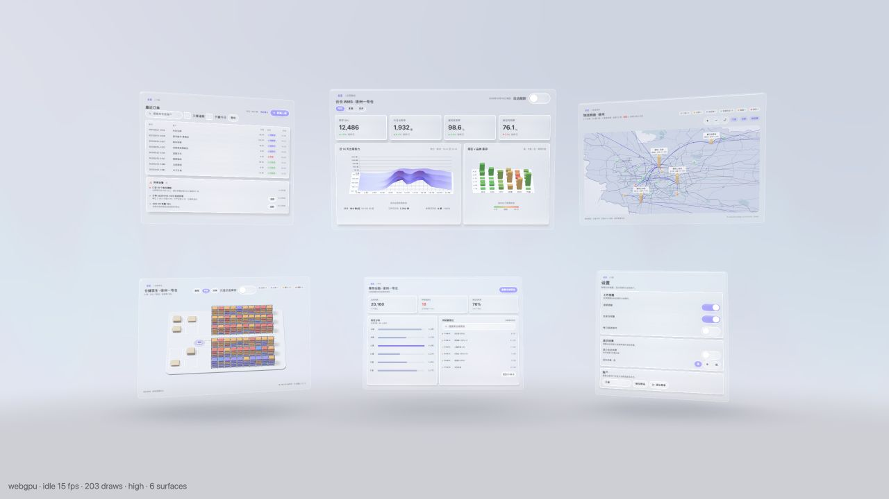
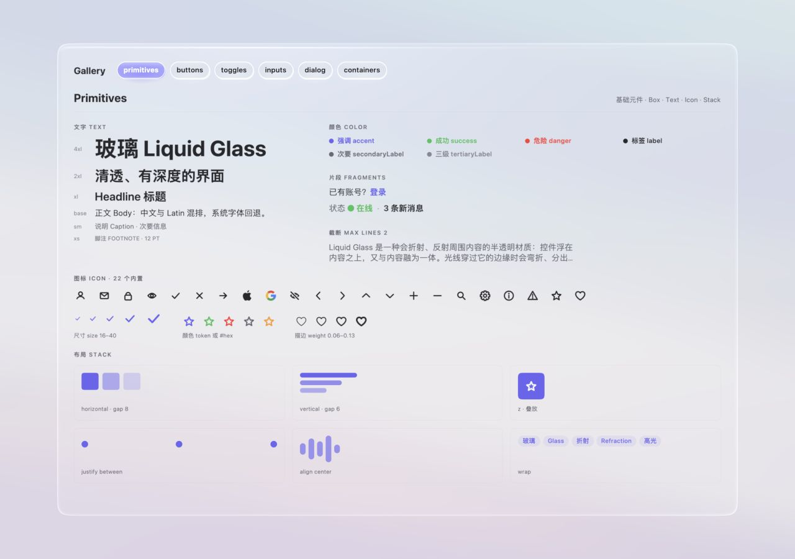
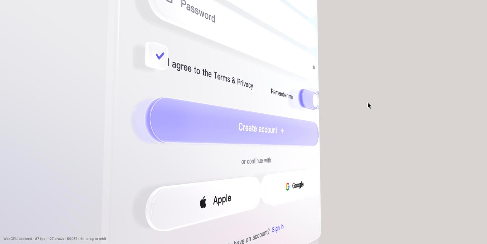

Interfaces belong
in space.让界面
进入空间。
Build with Vue components, then let controls, data, and 3D content share the same scene. Explore the complete app or inspect the pieces.用 Vue 组件搭建界面，让控件、数据和 3D 内容共享同一个场景。先体验完整应用，再查看每个组件。
A workspace with depth and purpose.有深度，也有清晰的工作动线。
Start with a prefilled demo login, then move between six connected views. Pan, rotate, and zoom the workspace to inspect charts, a map, and a spatial twin.从已预填的演示登录进入六个关联视图，再平移、旋转、缩放工作区，查看图表、地图和仓储空间模型。

See every control work.亲手试用每个控件。
Explore live Vue controls in 3D: left-drag to pan, right-drag to rotate, and scroll to zoom. The six section buttons reframe the view.在 3D 空间试用 Vue 控件：左键拖动平移，右键旋转，滚轮缩放；六个分区按钮可重新定位视角。

Open component gallery打开组件库Look closer at glass.从不同角度看玻璃。
A sign-up form shows how thickness, lighting, shadows, and input work together. Left-drag to pan, right-drag to rotate, and scroll to zoom.注册表单展示厚度、光照、投影和输入如何协同工作。左键拖动平移，右键旋转，滚轮缩放。

Open sign-up demo打开注册演示